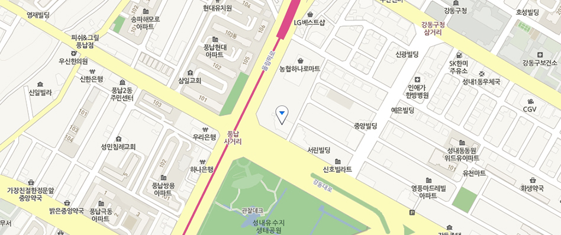

폴리 로고
주 메뉴

HOME >
ABOUT POLY >
Contact Us

- 본사주소
- 서울특별시 강동구 강동대로 143-64태창타워 4-6F
- (134-848)
- 연락처
- (02) 2224-7800
- 팩스
- (02) 483-7641
- 지하철 이용 시
- 8호선 강동구청역 3번 출구, 풍납사거리 방면 도보 5분
- 버스(지선/간선) 이용 시
- 40, 341, 351, 3212, 3214, 3220, 3318, 3411

하단내용